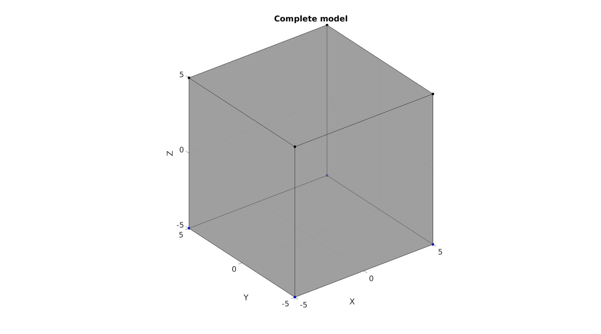
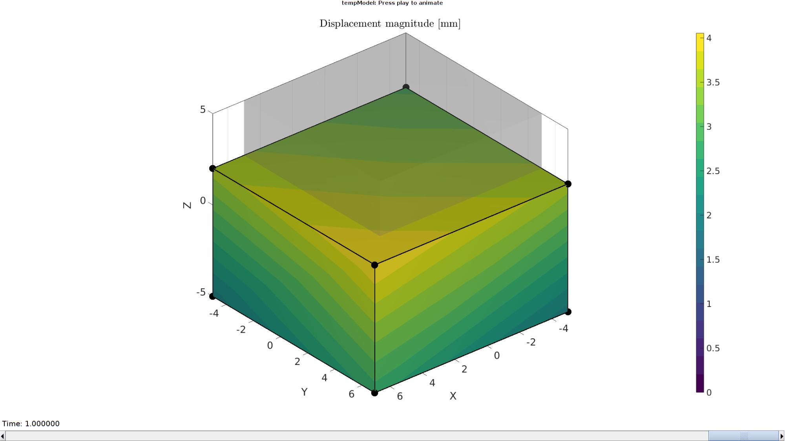
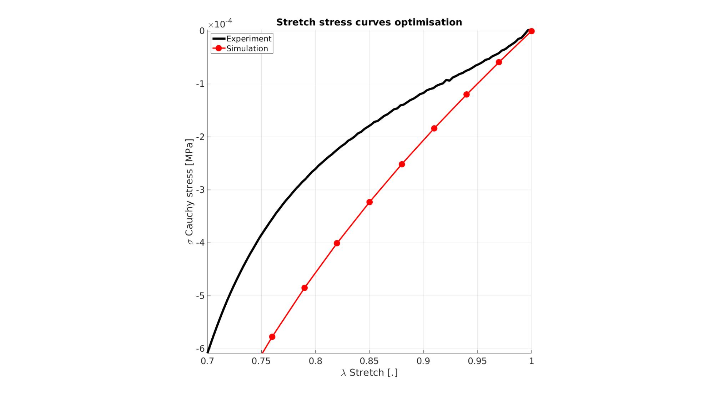
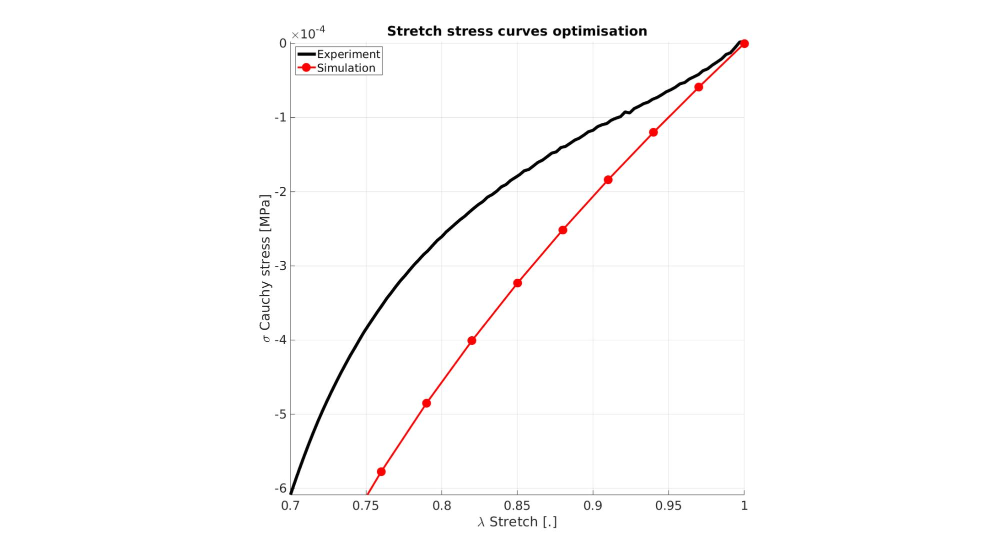
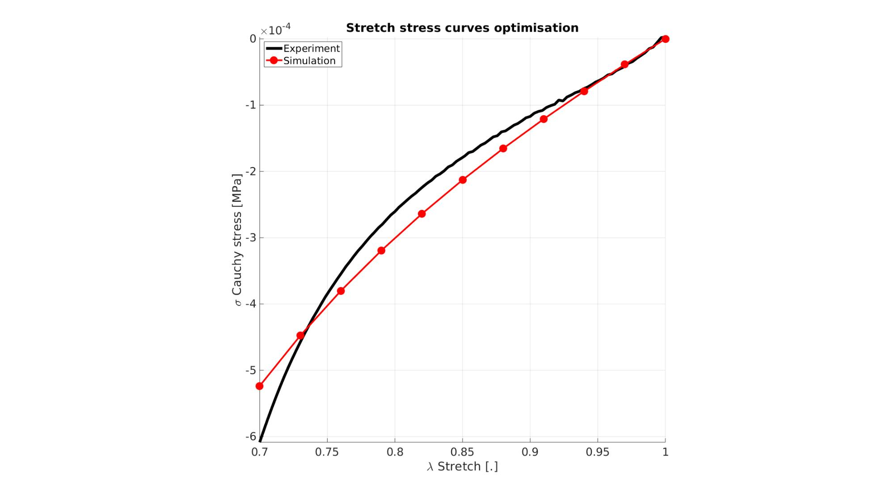
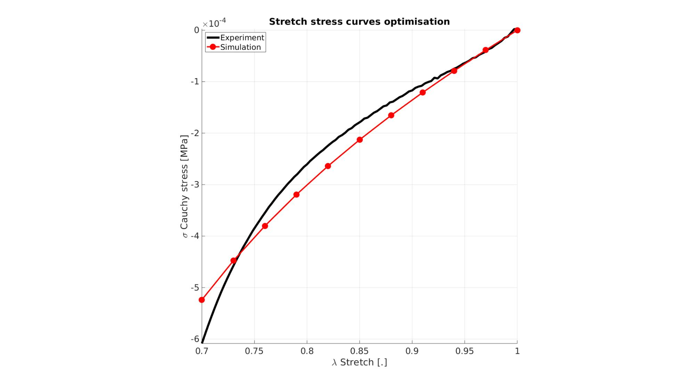
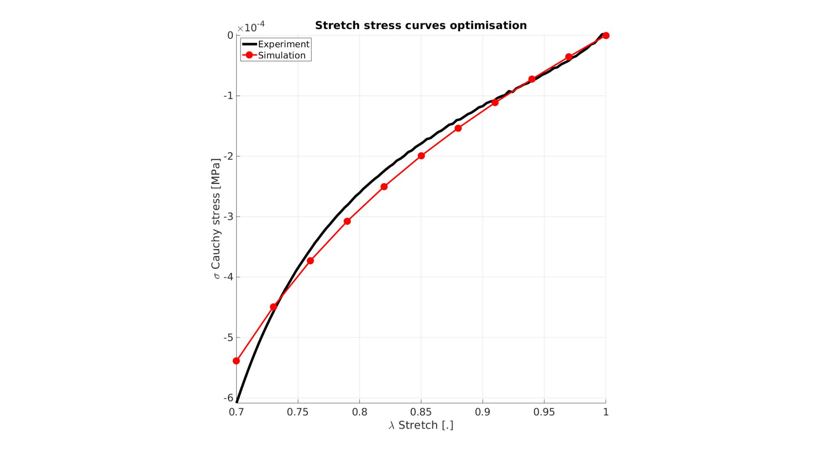
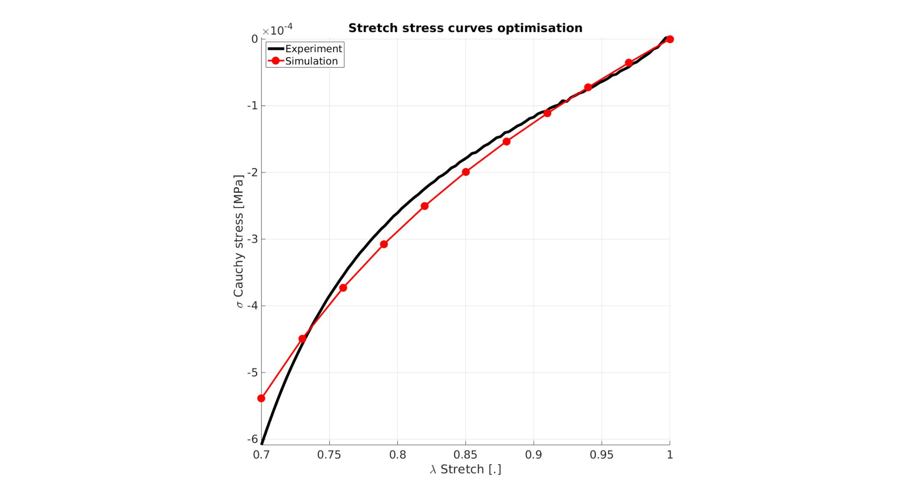
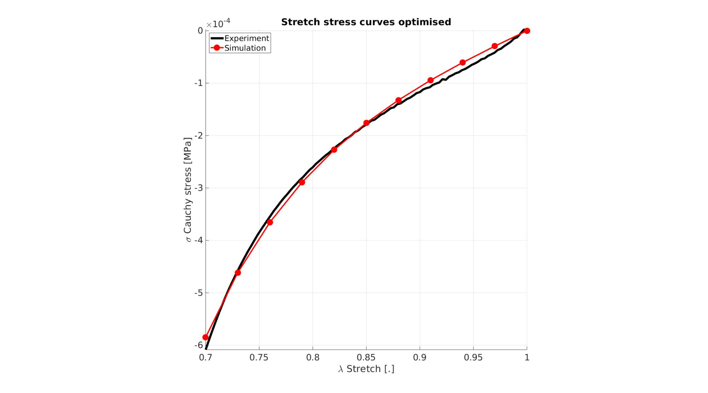
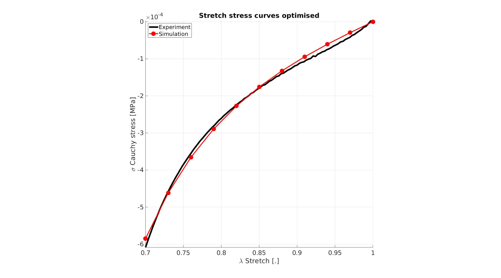

DEMO_febio_0042_inverse_FEA_cube_uniaxial
Below is a demonstration for: 1) Inverse FEA based material parameter optimisation
Contents
- Control parameters
- SIMULATE EXPERIMENTAL DATA
- CREATING MESHED BOX
- DEFINE BC's
- Defining the FEBio input structure
- Quick viewing of the FEBio input file structure
- Exporting the FEBio input file
- Running the FEBio analysis
- Import FEBio results
- Create structures for optimization
- start optimization
- Unnormalize and constrain parameters
- Unnormalize and constrain parameters
- Setting material parameters
- START FEBio
clear; close all; clc;
Plot settings
fontSize=20; faceAlpha1=0.8; faceAlpha2=1; edgeColor=0.25*ones(1,3); edgeWidth=1.5; markerSize=25; markerSize2=50; lineWidth=5; lineWidth2=3; cMap=viridis(20);
Control parameters
% Path names defaultFolder = fileparts(fileparts(mfilename('fullpath'))); savePath=fullfile(defaultFolder,'data','temp'); % Defining file names febioFebFileNamePart='tempModel'; febioFebFileName=fullfile(savePath,[febioFebFileNamePart,'.feb']); %FEB file name febioLogFileName=fullfile(savePath,[febioFebFileNamePart,'.txt']); %FEBio log file name febioLogFileName_disp=[febioFebFileNamePart,'_disp_out.txt']; %Log file name for exporting displacement febioLogFileName_force=[febioFebFileNamePart,'_force_out.txt']; %Log file name for exporting force febioLogFileName_stress=[febioFebFileNamePart,'_stress_out.txt']; %Log file name for exporting stress %Specifying dimensions and number of elements sampleWidth=10; sampleThickness=10; sampleHeight=10; pointSpacings=3*ones(1,3); initialArea=sampleWidth*sampleThickness; numElementsWidth=round(sampleWidth/pointSpacings(1)); numElementsThickness=round(sampleThickness/pointSpacings(2)); numElementsHeight=round(sampleHeight/pointSpacings(3)); stretchLoad=0.7; displacementMagnitude=(stretchLoad*sampleHeight)-sampleHeight; %True material parameter set k_factor=1e2; c1_true=0.000322322142618; m1_true=6; k_true=c1_true*k_factor; %Initial material parameter set c1_ini=c1_true*2; m1_ini=m1_true/2; k_ini=c1_ini*k_factor; P=[c1_ini m1_ini]; % FEA control settings numTimeSteps=10; %Number of time steps desired max_refs=25; %Max reforms max_ups=0; %Set to zero to use full-Newton iterations opt_iter=6; %Optimum number of iterations max_retries=5; %Maximum number of retires dtmin=(1/numTimeSteps)/100; %Minimum time step size dtmax=1/numTimeSteps; %Maximum time step size
SIMULATE EXPERIMENTAL DATA
%Basic set stress_cauchy_exp=1/1000*[-0.606636933451196;-0.594598753306976;-0.582704841004989;-0.571357405135258;-0.560202987257958;-0.549116632489736;-0.538518403222691;-0.528087294560408;-0.518193056737126;-0.508206114096577;-0.498701595140669;-0.489855637164223;-0.480813541456146;-0.472386398119889;-0.463619435755875;-0.455563887366101;-0.447492483369391;-0.439573886089611;-0.432050298442763;-0.424607647116797;-0.416804189884078;-0.410387298955262;-0.402977977822379;-0.396396657790034;-0.389210485373911;-0.383000553144204;-0.376675743693335;-0.370668858911072;-0.364731155035823;-0.358344772157269;-0.352790185960043;-0.346625957990168;-0.340956058045645;-0.335892515500584;-0.330212348100342;-0.325153422018813;-0.319890421672462;-0.315056500840712;-0.310859570288282;-0.305563240532117;-0.301114864342368;-0.295807178919732;-0.291944875824590;-0.287799721606394;-0.282704271932097;-0.279560319546267;-0.273953092186896;-0.271205596632553;-0.266019580975468;-0.261921529885230;-0.259473236771767;-0.254229845700605;-0.251227010966108;-0.246731599709182;-0.243347463269765;-0.240668206009318;-0.235904450179518;-0.233443491646300;-0.229240342796589;-0.226328455230997;-0.222574693739149;-0.219690552720043;-0.215908110296801;-0.213462994691799;-0.209402262394587;-0.206143135063048;-0.204259473767410;-0.200271046174199;-0.198497342254049;-0.194018107075590;-0.190682588685824;-0.190178278993820;-0.184939186637633;-0.184540226448861;-0.179325520197559;-0.177302998325867;-0.174896317893232;-0.170891038492450;-0.170506389072493;-0.165503062182587;-0.164964944739691;-0.160899776454826;-0.158388071874370;-0.156732253086585;-0.152865980799647;-0.151886036142296;-0.147064551962397;-0.146636586148680;-0.143247545748075;-0.139910407552933;-0.139643630040939;-0.135175245456319;-0.134411814767664;-0.131535143940800;-0.127943005303573;-0.127499404828055;-0.123718865018965;-0.123269655840332;-0.118450118919226;-0.117869603457104;-0.114259063948408;-0.111845005007273;-0.110782903827826;-0.106815200840467;-0.108112322079051;-0.103218831561054;-0.103859461792770;-0.100330051927225;-0.0988503888488038;-0.0984110683795259;-0.0920373613042230;-0.0944900398318279;-0.0908054642234128;-0.0873647791392896;-0.0857302637239363;-0.0832930518728098;-0.0811377337125286;-0.0801419455213994;-0.0773146108678843;-0.0750524119380378;-0.0737660915109812;-0.0711063097725948;-0.0689106003957611;-0.0662015603338655;-0.0637907034798034;-0.0622238776663924;-0.0587129121234732;-0.0590737570248270;-0.0542752113831988;-0.0539468997803651;-0.0504474583208646;-0.0479308792263506;-0.0474997497002284;-0.0422136232687380;-0.0419340474843669;-0.0383206523546593;-0.0353822402853126;-0.0342394575632298;-0.0296092241247699;-0.0290386117855990;-0.0252785740102147;-0.0211393477778685;-0.0210232271972257;-0.0149625128602809;-0.0150455267730763;-0.00925788965002460;-0.00559693887219605;-0.00235368730112040;0.00439939147625970;0.00280776088737496]; stretch_exp=[0.700330019000000;0.702340563275168;0.704351107550336;0.706361651825503;0.708372196100671;0.710382740375839;0.712393284651007;0.714403828926175;0.716414373201342;0.718424917476510;0.720435461751678;0.722446006026846;0.724456550302013;0.726467094577181;0.728477638852349;0.730488183127517;0.732498727402685;0.734509271677852;0.736519815953020;0.738530360228188;0.740540904503356;0.742551448778524;0.744561993053691;0.746572537328859;0.748583081604027;0.750593625879195;0.752604170154362;0.754614714429530;0.756625258704698;0.758635802979866;0.760646347255034;0.762656891530201;0.764667435805369;0.766677980080537;0.768688524355705;0.770699068630873;0.772709612906040;0.774720157181208;0.776730701456376;0.778741245731544;0.780751790006711;0.782762334281879;0.784772878557047;0.786783422832215;0.788793967107383;0.790804511382550;0.792815055657718;0.794825599932886;0.796836144208054;0.798846688483222;0.800857232758389;0.802867777033557;0.804878321308725;0.806888865583893;0.808899409859060;0.810909954134228;0.812920498409396;0.814931042684564;0.816941586959732;0.818952131234899;0.820962675510067;0.822973219785235;0.824983764060403;0.826994308335570;0.829004852610738;0.831015396885906;0.833025941161074;0.835036485436242;0.837047029711409;0.839057573986577;0.841068118261745;0.843078662536913;0.845089206812081;0.847099751087248;0.849110295362416;0.851120839637584;0.853131383912752;0.855141928187920;0.857152472463087;0.859163016738255;0.861173561013423;0.863184105288591;0.865194649563758;0.867205193838926;0.869215738114094;0.871226282389262;0.873236826664430;0.875247370939597;0.877257915214765;0.879268459489933;0.881279003765101;0.883289548040269;0.885300092315436;0.887310636590604;0.889321180865772;0.891331725140940;0.893342269416107;0.895352813691275;0.897363357966443;0.899373902241611;0.901384446516779;0.903394990791946;0.905405535067114;0.907416079342282;0.909426623617450;0.911437167892617;0.913447712167785;0.915458256442953;0.917468800718121;0.919479344993289;0.921489889268456;0.923500433543624;0.925510977818792;0.927521522093960;0.929532066369128;0.931542610644295;0.933553154919463;0.935563699194631;0.937574243469799;0.939584787744967;0.941595332020134;0.943605876295302;0.945616420570470;0.947626964845638;0.949637509120805;0.951648053395973;0.953658597671141;0.955669141946309;0.957679686221477;0.959690230496644;0.961700774771812;0.963711319046980;0.965721863322148;0.967732407597316;0.969742951872483;0.971753496147651;0.973764040422819;0.975774584697987;0.977785128973154;0.979795673248322;0.981806217523490;0.983816761798658;0.985827306073826;0.987837850348993;0.989848394624161;0.991858938899329;0.993869483174497;0.995880027449664;0.997890571724832;0.999901116000000]; %Interpolate to higher sampling n=100; stretch_exp_n=linspace(1,stretchLoad,n); stress_cauchy_exp_n = interp1(stretch_exp,stress_cauchy_exp,stretch_exp_n,'pchip'); %Override variables stress_cauchy_exp=stress_cauchy_exp_n; stretch_exp=stretch_exp_n; %Add noise stdNoise=0.01; %Standard deviation in units of stress stress_cauchy_exp_n=stress_cauchy_exp_n+stdNoise.*randn(size(stress_cauchy_exp_n));
CREATING MESHED BOX
%Create box 1 boxDim=[sampleWidth sampleThickness sampleHeight]; %Dimensions boxEl=[numElementsWidth numElementsThickness numElementsHeight]; %Number of elements [box1]=hexMeshBox(boxDim,boxEl); E=box1.E; V=box1.V; Fb=box1.Fb; faceBoundaryMarker=box1.faceBoundaryMarker; X=V(:,1); Y=V(:,2); Z=V(:,3); VE=[mean(X(E),2) mean(Y(E),2) mean(Z(E),2)]; elementMaterialIndices=ones(size(E,1),1);
% Plotting boundary surfaces cFigure; hold on; title('Model surfaces','FontSize',fontSize); gpatch(Fb,V,faceBoundaryMarker,'k',0.5); colormap(gjet(6)); icolorbar; axisGeom(gca,fontSize); drawnow;
DEFINE BC's
%Define supported node sets logicFace=faceBoundaryMarker==1; Fr=Fb(logicFace,:); bcSupportList_X=unique(Fr(:)); logicFace=faceBoundaryMarker==3; Fr=Fb(logicFace,:); bcSupportList_Y=unique(Fr(:)); logicFace=faceBoundaryMarker==5; Fr=Fb(logicFace,:); bcSupportList_Z=unique(Fr(:)); %Prescribed displacement nodes logicPrescribe=faceBoundaryMarker==6; Fr=Fb(logicPrescribe,:); bcPrescribeList=unique(Fr(:));
Visualize BC's
cFigure; hold on; title('Complete model','FontSize',fontSize); gpatch(Fb,V,'kw','k',0.5); plotV(V(bcSupportList_X,:),'r.','MarkerSize',markerSize); plotV(V(bcSupportList_Y,:),'g.','MarkerSize',markerSize); plotV(V(bcSupportList_Z,:),'b.','MarkerSize',markerSize); plotV(V(bcPrescribeList,:),'k.','MarkerSize',markerSize); axisGeom(gca,fontSize); drawnow;
Defining the FEBio input structure
See also febioStructTemplate and febioStruct2xml and the FEBio user manual.
%Get a template with default settings [febio_spec]=febioStructTemplate; %febio_spec version febio_spec.ATTR.version='2.5'; %Module section febio_spec.Module.ATTR.type='solid'; %Control section febio_spec.Control.analysis.ATTR.type='static'; febio_spec.Control.title='Cube analysis'; febio_spec.Control.time_steps=numTimeSteps; febio_spec.Control.step_size=1/numTimeSteps; febio_spec.Control.time_stepper.dtmin=dtmin; febio_spec.Control.time_stepper.dtmax=dtmax; febio_spec.Control.time_stepper.max_retries=max_retries; febio_spec.Control.time_stepper.opt_iter=opt_iter; febio_spec.Control.max_refs=max_refs; febio_spec.Control.max_ups=max_ups; %Material section febio_spec.Material.material{1}.ATTR.type='Ogden'; febio_spec.Material.material{1}.ATTR.id=1; febio_spec.Material.material{1}.c1=c1_ini; febio_spec.Material.material{1}.m1=m1_ini; febio_spec.Material.material{1}.c2=c1_ini; febio_spec.Material.material{1}.m2=-m1_ini; febio_spec.Material.material{1}.k=k_ini; %Geometry section % -> Nodes febio_spec.Geometry.Nodes{1}.ATTR.name='nodeSet_all'; %The node set name febio_spec.Geometry.Nodes{1}.node.ATTR.id=(1:size(V,1))'; %The node id's febio_spec.Geometry.Nodes{1}.node.VAL=V; %The nodel coordinates % -> Elements febio_spec.Geometry.Elements{1}.ATTR.type='hex8'; %Element type of this set febio_spec.Geometry.Elements{1}.ATTR.mat=1; %material index for this set febio_spec.Geometry.Elements{1}.ATTR.name='Cube'; %Name of the element set febio_spec.Geometry.Elements{1}.elem.ATTR.id=(1:1:size(E,1))'; %Element id's febio_spec.Geometry.Elements{1}.elem.VAL=E; % -> NodeSets febio_spec.Geometry.NodeSet{1}.ATTR.name='bcSupportList_X'; febio_spec.Geometry.NodeSet{1}.node.ATTR.id=bcSupportList_X(:); febio_spec.Geometry.NodeSet{2}.ATTR.name='bcSupportList_Y'; febio_spec.Geometry.NodeSet{2}.node.ATTR.id=bcSupportList_Y(:); febio_spec.Geometry.NodeSet{3}.ATTR.name='bcSupportList_Z'; febio_spec.Geometry.NodeSet{3}.node.ATTR.id=bcSupportList_Z(:); febio_spec.Geometry.NodeSet{4}.ATTR.name='bcPrescribeList'; febio_spec.Geometry.NodeSet{4}.node.ATTR.id=bcPrescribeList(:); %Boundary condition section % -> Fix boundary conditions febio_spec.Boundary.fix{1}.ATTR.bc='x'; febio_spec.Boundary.fix{1}.ATTR.node_set=febio_spec.Geometry.NodeSet{1}.ATTR.name; febio_spec.Boundary.fix{2}.ATTR.bc='y'; febio_spec.Boundary.fix{2}.ATTR.node_set=febio_spec.Geometry.NodeSet{2}.ATTR.name; febio_spec.Boundary.fix{3}.ATTR.bc='z'; febio_spec.Boundary.fix{3}.ATTR.node_set=febio_spec.Geometry.NodeSet{3}.ATTR.name; % -> Prescribe boundary conditions febio_spec.Boundary.prescribe{1}.ATTR.bc='z'; febio_spec.Boundary.prescribe{1}.ATTR.node_set=febio_spec.Geometry.NodeSet{4}.ATTR.name; febio_spec.Boundary.prescribe{1}.scale.ATTR.lc=1; febio_spec.Boundary.prescribe{1}.scale.VAL=1; febio_spec.Boundary.prescribe{1}.relative=1; febio_spec.Boundary.prescribe{1}.value=displacementMagnitude; %Output section % -> log file febio_spec.Output.logfile.ATTR.file=febioLogFileName; febio_spec.Output.logfile.node_data{1}.ATTR.file=febioLogFileName_disp; febio_spec.Output.logfile.node_data{1}.ATTR.data='ux;uy;uz'; febio_spec.Output.logfile.node_data{1}.ATTR.delim=','; febio_spec.Output.logfile.node_data{1}.VAL=1:size(V,1); febio_spec.Output.logfile.node_data{2}.ATTR.file=febioLogFileName_force; febio_spec.Output.logfile.node_data{2}.ATTR.data='Rx;Ry;Rz'; febio_spec.Output.logfile.node_data{2}.ATTR.delim=','; febio_spec.Output.logfile.node_data{2}.VAL=1:size(V,1); febio_spec.Output.logfile.element_data{1}.ATTR.file=febioLogFileName_stress; febio_spec.Output.logfile.element_data{1}.ATTR.data='sz'; febio_spec.Output.logfile.element_data{1}.ATTR.delim=','; febio_spec.Output.logfile.element_data{1}.VAL=1:size(E,1);
Quick viewing of the FEBio input file structure
The febView function can be used to view the xml structure in a MATLAB figure window.
febView(febio_spec); %Viewing the febio file
Exporting the FEBio input file
Exporting the febio_spec structure to an FEBio input file is done using the febioStruct2xml function.
febioStruct2xml(febio_spec,febioFebFileName); %Exporting to file and domNode
Running the FEBio analysis
To run the analysis defined by the created FEBio input file the runMonitorFEBio function is used. The input for this function is a structure defining job settings e.g. the FEBio input file name. The optional output runFlag informs the user if the analysis was run succesfully.
febioAnalysis.run_filename=febioFebFileName; %The input file name febioAnalysis.run_logname=febioLogFileName; %The name for the log file febioAnalysis.disp_on=1; %Display information on the command window febioAnalysis.disp_log_on=1; %Display convergence information in the command window febioAnalysis.runMode='external';%'internal'; febioAnalysis.t_check=0.25; %Time for checking log file (dont set too small) febioAnalysis.maxtpi=1e99; %Max analysis time febioAnalysis.maxLogCheckTime=10; %Max log file checking time [runFlag]=runMonitorFEBio(febioAnalysis);%START FEBio NOW!!!!!!!!
%%%%%%%%%%%%%%%%%%%%%%%%%%%%%%%%%%%%%%%%%%%%% --- STARTING FEBIO JOB --- 14-Oct-2020 10:27:03 Waiting for log file... Proceeding to check log file...14-Oct-2020 10:27:03 ------- converged at time : 0.1 ------- converged at time : 0.2 ------- converged at time : 0.3 ------- converged at time : 0.4 ------- converged at time : 0.5 ------- converged at time : 0.6 ------- converged at time : 0.7 ------- converged at time : 0.8 ------- converged at time : 0.9 ------- converged at time : 1 --- Done --- 14-Oct-2020 10:27:04
Import FEBio results
if runFlag==1 %i.e. a succesful run
Importing nodal displacements from a log file
dataStruct=importFEBio_logfile(fullfile(savePath,febioLogFileName_disp),1,1);
%Access data
N_disp_mat=dataStruct.data; %Displacement
timeVec=dataStruct.time; %Time
%Create deformed coordinate set
V_DEF=N_disp_mat+repmat(V,[1 1 size(N_disp_mat,3)]);
Importing element stress from a log file
dataStruct=importFEBio_logfile(fullfile(savePath,febioLogFileName_stress),1,1);
%Access data
E_stress_mat=dataStruct.data;
stress_cauchy_sim=mean(squeeze(E_stress_mat(:,end,:)),1)';
Plotting the simulated results using anim8 to visualize and animate deformations
[CV]=faceToVertexMeasure(E,V,E_stress_mat(:,:,end));
% Create basic view and store graphics handle to initiate animation
hf=cFigure; %Open figure
gtitle([febioFebFileNamePart,': Press play to animate']);
title('$\sigma_{zz}$ [MPa]','Interpreter','Latex')
hp=gpatch(Fb,V_DEF(:,:,end),CV,'k',1); %Add graphics object to animate
hp.Marker='.';
hp.MarkerSize=markerSize2;
hp.FaceColor='interp';
gpatch(Fb,V,0.5*ones(1,3),'none',0.25); %A static graphics object
axisGeom(gca,fontSize);
colormap(cMap); colorbar;
caxis([min(E_stress_mat(:)) max(E_stress_mat(:))]);
axis(axisLim(V_DEF)); %Set axis limits statically
view(140,30);
camlight headlight;
% Set up animation features
animStruct.Time=timeVec; %The time vector
for qt=1:1:size(N_disp_mat,3) %Loop over time increments
[CV]=faceToVertexMeasure(E,V,E_stress_mat(:,:,qt));
%Set entries in animation structure
animStruct.Handles{qt}=[hp hp]; %Handles of objects to animate
animStruct.Props{qt}={'Vertices','CData'}; %Properties of objects to animate
animStruct.Set{qt}={V_DEF(:,:,qt),CV}; %Property values for to set in order to animate
end
anim8(hf,animStruct); %Initiate animation feature
drawnow;
 Calculate the simulated applied uniaxial stretch
DZ_set=N_disp_mat(bcPrescribeList,end,:); %Z displacements of the prescribed set DZ_set=mean(DZ_set,1); %Calculate mean Z displacements across nodes stretch_sim=(DZ_set(:)+sampleHeight)./sampleHeight; %Derive stretch %Interpolate experiment onto simulated points stress_cauchy_exp_sim = interp1(stretch_exp,stress_cauchy_exp,stretch_sim,'pchip');
Visualize stress-stretch curve
cFigure; hold on; title('Stretch stress curves optimisation','FontSize',fontSize); xlabel('\lambda Stretch [.]','FontSize',fontSize); ylabel('\sigma Cauchy stress [MPa]','FontSize',fontSize); zlabel('Z','FontSize',fontSize); hold on; Hn(1)=plot(stretch_exp,stress_cauchy_exp,'k-','lineWidth',lineWidth); view(2); axis tight; grid on; axis square; axis manual; Hn(2)=plot(stretch_sim,stress_cauchy_sim,'r.-','lineWidth',lineWidth2,'markerSize',markerSize2); legend(Hn,{'Experiment','Simulation'},'Location','northwest'); set(gca,'FontSize',fontSize); drawnow;

end
Create structures for optimization
% Material structure mat_struct.id=1; %Material id mat_struct.par_names={'c1','m1','c2','m2','k'}; %Parameter names mat_struct.par_values={c1_ini m1_ini c1_ini -m1_ini k_ini}; %Parameter values % docNode=set_mat_par_FEBIO(FEB_struct.run_filename,FEB_struct.run_filename,{mat_struct}); febioAnalysis.disp_on=0; febioAnalysis.disp_log_on=0; %What should be known to the objective function: objectiveStruct.h=Hn(2); objectiveStruct.bcPrescribeList=bcPrescribeList; objectiveStruct.stretch_exp=stretch_exp; objectiveStruct.stress_cauchy_exp=stress_cauchy_exp; objectiveStruct.febioAnalysis=febioAnalysis; objectiveStruct.febio_spec=febio_spec; objectiveStruct.febioFebFileName=febioFebFileName; objectiveStruct.mat_struct=mat_struct; objectiveStruct.k_factor=k_factor; objectiveStruct.initialArea=initialArea; objectiveStruct.sampleHeight=sampleHeight; objectiveStruct.parNormFactors=P; %This will normalize the parameters to ones(size(P)) objectiveStruct.Pb_struct.xx_c=P; %Parameter constraining centre objectiveStruct.Pb_struct.xxlim=[[P(1)/100 2]' [P(1)*100 50]']; %Parameter bounds %Optimisation settings maxNumberIterations=100; %Maximum number of optimization iterations maxNumberFunctionEvaluations=maxNumberIterations*10; %Maximum number of function evaluations, N.B. multiple evaluations are used per iteration functionTolerance=1e-6; %Tolerance on objective function value parameterTolerance=1e-6; %Tolerance on parameter variation displayTypeIterations='iter'; objectiveStruct.method=2; %File names of output files output_names.displacement=fullfile(savePath,febioLogFileName_disp); output_names.stress=fullfile(savePath,febioLogFileName_stress); objectiveStruct.run_output_names=output_names;
start optimization
Pn=P./objectiveStruct.parNormFactors; switch objectiveStruct.method case 1 %fminsearch and Nelder-Mead OPT_options=optimset('fminsearch'); % 'Nelder-Mead simplex direct search' OPT_options = optimset(OPT_options,'MaxFunEvals',maxNumberFunctionEvaluations,... 'MaxIter',maxNumberIterations,... 'TolFun',functionTolerance,... 'TolX',parameterTolerance,... 'Display',displayTypeIterations,... 'FinDiffRelStep',1e-2,... 'DiffMaxChange',0.5); [Pn_opt,OPT_out.fval,OPT_out.exitflag,OPT_out.output]= fminsearch(@(Pn) objectiveFunctionIFEA(Pn,objectiveStruct),Pn,OPT_options); case 2 %lsqnonlin and Levenberg-Marquardt OPT_options = optimoptions(@lsqnonlin,'Algorithm','levenberg-marquardt'); OPT_options = optimoptions(OPT_options,'MaxFunEvals',maxNumberFunctionEvaluations,... 'MaxIter',maxNumberIterations,... 'TolFun',functionTolerance,... 'TolX',parameterTolerance,... 'Display',displayTypeIterations,... 'FinDiffRelStep',1e-2,... 'DiffMaxChange',0.5); [Pn_opt,OPT_out.resnorm,OPT_out.residual]= lsqnonlin(@(Pn) objectiveFunctionIFEA(Pn,objectiveStruct),Pn,[],[],OPT_options); end
[Fopt,OPT_stats_out]=objectiveFunctionIFEA(Pn_opt,objectiveStruct);
Unnormalize and constrain parameters
P_opt=Pn_opt.*objectiveStruct.parNormFactors; %Scale back, undo normalization %Constraining parameters for q=1:1:numel(P) [P(q)]=boxconstrain(P(q),objectiveStruct.Pb_struct.xxlim(q,1),objectiveStruct.Pb_struct.xxlim(q,2),objectiveStruct.Pb_struct.xx_c(q)); end disp_text=sprintf('%6.16e,',P_opt); disp_text=disp_text(1:end-1); disp(['P_opt=',disp_text]);
P_opt=2.8910156656750780e-04,6.0064916214937885e+00
cFigure; hold on; title('Stretch stress curves optimised','FontSize',fontSize); xlabel('\lambda Stretch [.]','FontSize',fontSize); ylabel('\sigma Cauchy stress [MPa]','FontSize',fontSize); zlabel('Z','FontSize',fontSize); hold on; Hn(1)=plot(stretch_exp,stress_cauchy_exp,'k-','lineWidth',lineWidth); Hn(2)=plot(OPT_stats_out.stretch_sim,OPT_stats_out.stress_cauchy_sim,'r.-','lineWidth',lineWidth2,'markerSize',markerSize2); legend(Hn,{'Experiment','Simulation'},'Location','northwest'); view(2); axis tight; grid on; set(gca,'FontSize',fontSize); drawnow;

function [Fopt,OPT_stats_out]=objectiveFunctionIFEA(Pn,objectiveStruct)
febioFebFileName=objectiveStruct.febioFebFileName; febio_spec=objectiveStruct.febio_spec;
Unnormalize and constrain parameters
P=Pn.*objectiveStruct.parNormFactors; %Scale back, undo normalization P_in=P; %Proposed P %Constraining parameters for q=1:1:numel(P) [P(q)]=boxconstrain(P(q),objectiveStruct.Pb_struct.xxlim(q,1),objectiveStruct.Pb_struct.xxlim(q,2),objectiveStruct.Pb_struct.xx_c(q)); end
Setting material parameters
%Acces material parameters mat_struct=objectiveStruct.mat_struct; mat_struct.par_values={P(1) P(2) P(1) -P(2) P(1)*objectiveStruct.k_factor}; disp('SETTING MATERIAL PARAMETERS...'); disp(['Proposed (norm.): ',sprintf(repmat('%6.16e ',[1,numel(Pn)]),Pn)]); disp(['Proposed : ',sprintf(repmat('%6.16e ',[1,numel(P_in)]),P_in)]); disp(['Set (constr.) : ',sprintf(repmat('%6.16e ',[1,numel(P)]),P)]); %Assign material parameters matId=mat_struct.id; for q=1:1:numel(mat_struct.par_names) parNameNow=mat_struct.par_names{q}; parValuesNow=mat_struct.par_values{q}; febio_spec.Material.material{matId}.(parNameNow)=mat2strIntDouble(parValuesNow); end febioStruct2xml(febio_spec,febioFebFileName); %Exporting to file and domNode disp('Done')
SETTING MATERIAL PARAMETERS... Proposed (norm.): 1.0000000000000000e+00 1.0000000000000000e+00 Proposed : 6.4464428523599996e-04 3.0000000000000000e+00 Set (constr.) : 6.4464428523599996e-04 3.0000000000000000e+00 Done
SETTING MATERIAL PARAMETERS... Proposed (norm.): 1.0100000000000000e+00 1.0000000000000000e+00 Proposed : 6.5109072808836000e-04 3.0000000000000000e+00 Set (constr.) : 6.5109072806643559e-04 3.0000000000000000e+00 Done
SETTING MATERIAL PARAMETERS... Proposed (norm.): 1.0000000000000000e+00 1.0100000000000000e+00 Proposed : 6.4464428523599996e-04 3.0300000000000002e+00 Set (constr.) : 6.4464428523599996e-04 3.0299999959257593e+00 Done
SETTING MATERIAL PARAMETERS... Proposed (norm.): 9.9938199400086347e-01 9.9990322786075658e-01 Proposed : 6.4424589120041500e-04 2.9997096835822696e+00 Set (constr.) : 6.4424589125216451e-04 2.9997096835904258e+00 Done
SETTING MATERIAL PARAMETERS... Proposed (norm.): 1.0093819940008635e+00 9.9990322786075658e-01 Proposed : 6.5069233405277505e-04 2.9997096835822696e+00 Set (constr.) : 6.5069233403466941e-04 2.9997096835904258e+00 Done
SETTING MATERIAL PARAMETERS... Proposed (norm.): 9.9938199400086347e-01 1.0099032278607565e+00 Proposed : 6.4424589120041500e-04 3.0297096835822694e+00 Set (constr.) : 6.4424589125216451e-04 3.0297096796251695e+00 Done
SETTING MATERIAL PARAMETERS... Proposed (norm.): 9.9330944948506450e-01 9.9895445155500262e-01 Proposed : 6.4033126008146402e-04 2.9968633546650079e+00 Set (constr.) : 6.4033132574225669e-04 2.9968633649516416e+00 Done
SETTING MATERIAL PARAMETERS... Proposed (norm.): 1.0033094494850645e+00 9.9895445155500262e-01 Proposed : 6.4677770293382407e-04 2.9968633546650079e+00 Set (constr.) : 6.4677770293302935e-04 2.9968633649516416e+00 Done
SETTING MATERIAL PARAMETERS... Proposed (norm.): 9.9330944948506450e-01 1.0089544515550026e+00 Proposed : 6.4033126008146402e-04 3.0268633546650081e+00 Set (constr.) : 6.4033132574225669e-04 3.0268633517397534e+00 Done
SETTING MATERIAL PARAMETERS... Proposed (norm.): 9.4169363841756282e-01 9.9107018936690849e-01 Proposed : 6.0705742244897797e-04 2.9732105681007255e+00 Set (constr.) : 6.0710082089487449e-04 2.9732169749514141e+00 Done
SETTING MATERIAL PARAMETERS... Proposed (norm.): 9.5169363841756283e-01 9.9107018936690849e-01 Proposed : 6.1350386530133801e-04 2.9732105681007255e+00 Set (constr.) : 6.1352855569851066e-04 2.9732169749514141e+00 Done
SETTING MATERIAL PARAMETERS... Proposed (norm.): 9.4169363841756282e-01 1.0010701893669085e+00 Proposed : 6.0705742244897797e-04 3.0032105681007257e+00 Set (constr.) : 6.0710082089487449e-04 3.0032105680957319e+00 Done
SETTING MATERIAL PARAMETERS... Proposed (norm.): 7.5376774343618158e-01 9.6883697631047394e-01 Proposed : 4.8591206820136986e-04 2.9065109289314219e+00 Set (constr.) : 4.8910618500600650e-04 2.9067823513152202e+00 Done
SETTING MATERIAL PARAMETERS... Proposed (norm.): 7.6376774343618159e-01 9.6883697631047394e-01 Proposed : 4.9235851105372986e-04 2.9065109289314219e+00 Set (constr.) : 4.9518448651318745e-04 2.9067823513152202e+00 Done
SETTING MATERIAL PARAMETERS... Proposed (norm.): 7.5376774343618158e-01 9.7883697631047395e-01 Proposed : 4.8591206820136986e-04 2.9365109289314217e+00 Set (constr.) : 4.8910618500600650e-04 2.9365960968450766e+00 Done
SETTING MATERIAL PARAMETERS... Proposed (norm.): 6.3381425125128110e-01 1.0096853234298324e+00 Proposed : 4.0858473497027261e-04 3.0290559702894972e+00 Set (constr.) : 4.1879196289058200e-04 3.0290559665879004e+00 Done
SETTING MATERIAL PARAMETERS... Proposed (norm.): 6.4381425125128111e-01 1.0096853234298324e+00 Proposed : 4.1503117782263260e-04 3.0290559702894972e+00 Set (constr.) : 4.2445109878038486e-04 3.0290559665879004e+00 Done
SETTING MATERIAL PARAMETERS... Proposed (norm.): 6.3381425125128110e-01 1.0197821766641308e+00 Proposed : 4.0858473497027261e-04 3.0593465299923928e+00 Set (constr.) : 4.1879196289058200e-04 3.0593464984518803e+00 Done
SETTING MATERIAL PARAMETERS... Proposed (norm.): 5.7633514211750125e-01 1.3717472662606918e+00 Proposed : 3.7153115574672506e-04 4.1152417987820753e+00 Set (constr.) : 3.8706642306888915e-04 4.1150325358314550e+00 Done
SETTING MATERIAL PARAMETERS... Proposed (norm.): 5.8633514211750126e-01 1.3717472662606918e+00 Proposed : 3.7797759859908506e-04 4.1152417987820753e+00 Set (constr.) : 3.9248468068054764e-04 4.1150325358314550e+00 Done
SETTING MATERIAL PARAMETERS... Proposed (norm.): 5.7633514211750125e-01 1.3854647389232986e+00 Proposed : 3.7153115574672506e-04 4.1563942167698960e+00 Set (constr.) : 3.8706642306888915e-04 4.1561609270437865e+00 Done
SETTING MATERIAL PARAMETERS... Proposed (norm.): 4.7015062190995999e-01 1.9768806820783353e+00 Proposed : 3.0307991161440700e-04 5.9306420462350058e+00 Set (constr.) : 3.3234407715330018e-04 5.9268498004720325e+00 Done
SETTING MATERIAL PARAMETERS... Proposed (norm.): 4.8015062190996000e-01 1.9768806820783353e+00 Proposed : 3.0952635446676705e-04 5.9306420462350058e+00 Set (constr.) : 3.3727103748299359e-04 5.9268498004720325e+00 Done
SETTING MATERIAL PARAMETERS... Proposed (norm.): 4.7015062190995999e-01 1.9966494888991186e+00 Proposed : 3.0307991161440700e-04 5.9899484666973564e+00 Set (constr.) : 3.3234407715330018e-04 5.9859215588874140e+00 Done
SETTING MATERIAL PARAMETERS... Proposed (norm.): 4.4898935143342256e-01 2.0006001603049550e+00 Proposed : 2.8943841953337385e-04 6.0018004809148646e+00 Set (constr.) : 3.2207812682011398e-04 5.9977255479279172e+00 Done
SETTING MATERIAL PARAMETERS... Proposed (norm.): 4.5898935143342257e-01 2.0006001603049550e+00 Proposed : 2.9588486238573390e-04 6.0018004809148646e+00 Set (constr.) : 3.2690221081524840e-04 5.9977255479279172e+00 Done
SETTING MATERIAL PARAMETERS... Proposed (norm.): 4.4898935143342256e-01 2.0206061619080047e+00 Proposed : 2.8943841953337385e-04 6.0618184857240145e+00 Set (constr.) : 3.2207812682011398e-04 6.0574944949955531e+00 Done
SETTING MATERIAL PARAMETERS... Proposed (norm.): 4.4846681059410876e-01 2.0021638738312628e+00 Proposed : 2.8910156656750780e-04 6.0064916214937885e+00 Set (constr.) : 3.2182739402507652e-04 6.0023975748777509e+00 Done
SETTING MATERIAL PARAMETERS... Proposed (norm.): 4.5846681059410876e-01 2.0021638738312628e+00 Proposed : 2.9554800941986780e-04 6.0064916214937885e+00 Set (constr.) : 3.2664892302826723e-04 6.0023975748777509e+00 Done
SETTING MATERIAL PARAMETERS... Proposed (norm.): 4.4846681059410876e-01 2.0221855125695756e+00 Proposed : 2.8910156656750780e-04 6.0665565377087267e+00 Set (constr.) : 3.2182739402507652e-04 6.0622124650499885e+00 Done
SETTING MATERIAL PARAMETERS... Proposed (norm.): 4.4845129060339189e-01 2.0022244631663284e+00 Proposed : 2.8909156169418525e-04 6.0066733894989852e+00 Set (constr.) : 3.2181994905439604e-04 6.0025786010872482e+00 Done
SETTING MATERIAL PARAMETERS... Proposed (norm.): 4.4845130284342349e-01 2.0022244093472583e+00 Proposed : 2.8909156958465169e-04 6.0066732280417749e+00 Set (constr.) : 3.2181995492591725e-04 6.0025784402889855e+00 Done
SETTING MATERIAL PARAMETERS... Proposed (norm.): 4.4845142406641436e-01 2.0022238763371720e+00 Proposed : 2.8909164773036002e-04 6.0066716290115156e+00 Set (constr.) : 3.2182001307637240e-04 6.0025768477847619e+00 Done
SETTING MATERIAL PARAMETERS... Proposed (norm.): 4.4845252907913452e-01 2.0022190180265436e+00 Proposed : 2.8909236007049514e-04 6.0066570540796302e+00 Set (constr.) : 3.2182054314935910e-04 6.0025623323364403e+00 Done
SETTING MATERIAL PARAMETERS... Proposed (norm.): 4.4845816386180365e-01 2.0021942640651456e+00 Proposed : 2.8909599250094136e-04 6.0065827921954362e+00 Set (constr.) : 3.2182324615567755e-04 6.0024883735227110e+00 Done
SETTING MATERIAL PARAMETERS... Proposed (norm.): 4.4846395854342230e-01 2.0021691529209185e+00 Proposed : 2.8909972800933160e-04 6.0065074587627549e+00 Set (constr.) : 3.2182602588178564e-04 6.0024133475183401e+00 Done
SETTING MATERIAL PARAMETERS... Proposed (norm.): 4.4846562753743352e-01 2.0021642514835296e+00 Proposed : 2.8910080391678300e-04 6.0064927544505888e+00 Set (constr.) : 3.2182682650625893e-04 6.0023987032112291e+00 Done
SETTING MATERIAL PARAMETERS... Proposed (norm.): 4.4846681059410876e-01 2.0021638738312628e+00 Proposed : 2.8910156656750780e-04 6.0064916214937885e+00 Set (constr.) : 3.2182739402507652e-04 6.0023975748777509e+00 Done
START FEBio
[runFlag]=runMonitorFEBio(objectiveStruct.febioAnalysis); %pause(0.1); bcPrescribeList=objectiveStruct.bcPrescribeList; sampleHeight=objectiveStruct.sampleHeight; stretch_exp=objectiveStruct.stretch_exp; stress_cauchy_exp=objectiveStruct.stress_cauchy_exp; if runFlag==1 %Importing displacement [~,N_disp_mat,~]=importFEBio_logfile(objectiveStruct.run_output_names.displacement,1,1); % Importing element stress from a log file [~, E_stress_mat,~]=importFEBio_logfile(objectiveStruct.run_output_names.stress,1,1); stress_cauchy_sim=mean(squeeze(E_stress_mat(:,end,:)),1)'; %Derive applied stretch DZ_set=N_disp_mat(bcPrescribeList,end,:); %Final nodal displacements DZ_set=mean(DZ_set,1); stretch_sim=(DZ_set+sampleHeight)./sampleHeight; stretch_sim=stretch_sim(:); if ~isempty(objectiveStruct.h) objectiveStruct.h.XData=stretch_sim; objectiveStruct.h.YData=stress_cauchy_sim; drawnow; end %Interpolate experiment onto simulated points stress_cauchy_sim_exp = interp1(stretch_sim,stress_cauchy_sim,stretch_exp,'pchip'); %Derive Fopt stressDev=stress_cauchy_exp-stress_cauchy_sim_exp; switch objectiveStruct.method case 1 Fopt=sum((stressDev).^2); %Sum of squared differences case 2 Fopt=stressDev(:);%(stressDev).^2; %Squared differences end OPT_stats_out.stress_cauchy_sim=stress_cauchy_sim; OPT_stats_out.stretch_sim=stretch_sim; OPT_stats_out.stressDev=stressDev; OPT_stats_out.Fopt=Fopt; else %Output NaN switch objectiveStruct.method case 1 Fopt=NaN; case 2 Fopt=NaN(size(stress_cauchy_exp)); %Squared differences end OPT_stats_out=[]; end
 
 
 
  
 
 
 


end
First-Order Norm of
Iteration Func-count Residual optimality Lambda step
0 3 2.30665e-06 6.19e-06 0.01
1 6 2.29882e-06 6.18e-06 0.001 0.000625537
2 9 2.22262e-06 6.07e-06 0.0001 0.00614622
3 12 1.6306e-06 5.14e-06 1e-05 0.0522145
4 15 3.08387e-07 1.85e-06 1e-06 0.189237
5 18 7.90897e-08 1.61e-07 1e-07 0.126718
6 21 4.21962e-08 7.89e-08 1e-08 0.366596
7 24 1.30803e-08 2.59e-07 1e-09 0.614379
8 27 8.91627e-09 2.71e-09 1e-10 0.031787
9 30 8.91526e-09 2.94e-11 1e-11 0.00164871
Local minimum possible.
lsqnonlin stopped because the relative size of the current step is less than
the value of the step size tolerance.

GIBBON www.gibboncode.org
Kevin Mattheus Moerman, gibbon.toolbox@gmail.com
GIBBON footer text
License: https://github.com/gibbonCode/GIBBON/blob/master/LICENSE
GIBBON: The Geometry and Image-based Bioengineering add-On. A toolbox for image segmentation, image-based modeling, meshing, and finite element analysis.
Copyright (C) 2006-2020 Kevin Mattheus Moerman
This program is free software: you can redistribute it and/or modify it under the terms of the GNU General Public License as published by the Free Software Foundation, either version 3 of the License, or (at your option) any later version.
This program is distributed in the hope that it will be useful, but WITHOUT ANY WARRANTY; without even the implied warranty of MERCHANTABILITY or FITNESS FOR A PARTICULAR PURPOSE. See the GNU General Public License for more details.
You should have received a copy of the GNU General Public License along with this program. If not, see http://www.gnu.org/licenses/.